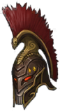
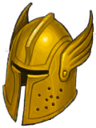
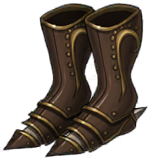
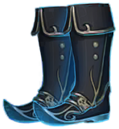
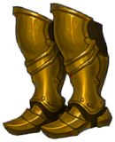
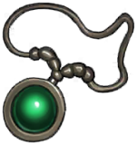
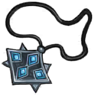

역기획서 · 장비
아이템 스킬 45종
Item_Skill_Scriptable은 장비 이름(Item_Name)으로 장비와 연결됩니다. 효과 문구는 장비의 Item_DES에 있습니다.
장비별 아이템 스킬
| 장비 | 등급 | 부위 | 스킬 이름 | 유형 | 직업 | 쿨 | 효과(장비 설명) | |
|---|---|---|---|---|---|---|---|---|
 | 라바 소드 | RD | 무기 | 더블 어택 | Passive | 워리어 | 0 | 용암의 정수를 받은 검 일반 공격시 공격력의 50% 추가피해 |
 | 라바 완드 | RD | 무기 | 마방 디버프 | Passive | 메이지 | 0 | 용암의 정수를 받은 완드 일반 공격시 5초간 적 마법 방어력 50% 하락 ( 중첩 불가 ) |
 | 라바 불렛 | RD | 무기 | 더블 어택 | Passive | 헌터 | 0 | 용암의 정수를 받은 불렛 일반 공격시 공격력의 50% 추가피해 |
 | 라바 너클 | RD | 무기 | 물방 디버프 | Passive | 어쌔신 | 0 | 용암의 정수를 받은 너클 일반 공격시 5초간 적 물리 방어력 50% 하락 ( 중첩 불가 ) |
| 라바 해머 | RD | 무기 | 체력1% | Passive | 팔라딘 | 0 | 용암의 정수를 받은 해머 일반 공격시 최대 체력 1% 회복 |
 | 엑스칼리버 | RD | 무기 | 엑스칼리버 | Passive | 워리어 | 0 | 일반 공격시 공격력의 100% 광역 피해 |
 | 계시의 금서 | RD | 무기 | 계시의 금서 | Passive | 메이지 | 0 | 스킬 사용시 최대 체력의 2% 회복 |
 | 묠니르 | RD | 무기 | 묠니르 | Passive | 팔라딘 | 0 | 일반 공격시 최대 체력 2% 회복 후 공격력의 50% 광역피해 |
 | 심판의 총신 | RD | 무기 | 심판의 총신 | Passive | 헌터 | 0 | 타겟과의 거리가 멀수록 공격력 증가 |
 | 에테르 다거 | RD | 무기 | 에테르 다거 | Passive | 어쌔신 | 0 | 일반 공격시 5초간 적 물리 방어력 50% 하락 ( 중첩 불가 ) 순간이동 , 은신 이후 1초간 공격력 50% 증가 |
| 사냥꾼의 머리띠 | RD | 투구 | 지 | Passive | 공용 | 0 | 사거리 두배 증가 | |
 | 광전사의 투구 | RD | 투구 | 지 | Passive | 공용 | 0 | 광전사의 반지 착용 시 광폭화 상시 발동 |
| 암살자의 두건 | RD | 투구 | 지 | Passive | 어쌔신 | 0 | 은신 시 초당 최대체력의 10% 회복 | |
| 마법사의 가면 | RD | 투구 | 지 | Passive | 메이지 | 0 | 스킬 적중 시 대상 마법 저항력 40% 감소 (중첩 불가) | |
 | 성기사의 투구 | RD | 투구 | 구 | Passive | 팔라딘 | 0 | 번개 방출시 20%의 확률로 1초간 타겟 기절 |
 | 광전사의 신발 | RD | 신발 | 발ㅇ | cool | 공용 | 3 | 3초마다 타겟에게 빠른 속도로 돌진 |
 | 마법사의 신발 | RD | 신발 | 마법사의 신발 | cool | 메이지 | 20 | 최대 체력 50% 이하 시 가장 먼 곳으로 텔레포트 후 1초간 무적 쿨타임 : 20초 |
 | 성기사의 신발 | RD | 신발 | 마법사의 신발 | Passive | 팔라딘 | 0 | 체력 50% 이하시 받는 피해 40% 감소 |
 | 나무 방패 | C | 방패 | 일반 회복 | cool | 공용 | 15 | 15초마다 최대 체력의 10% 회복 |
 | 강철 방패 | R | 방패 | 희귀 회복 | cool | 공용 | 17 | 17초마다 최대 체력의 20% 회복 |
 | 플레어 쉴드 | E | 방패 | 영웅 회복 | cool | 공용 | 17 | 17초마다 최대 체력의 25% 회복 |
 | 라바 쉴드 | RD | 방패 | 영웅 회복 | cool | 공용 | 17 | 용암의 정수를 받은 쉴드 17초마다 최대 체력의 30% 회복 |
 | 천휘방패 | RD | 방패 | 천휘방패 | cool | 공용 | 17 | 17초마다 최대 체력의 20% 회복 후 4초간 스턴,침묵,슬로우 무효화 |
 | 사냥꾼의 목걸이 | RD | 목걸이 | 지 | Passive | 헌터 | 0 | 일반 공격시 공격속도 30% 상승 |
| 광전사의 목걸이 | RD | 목걸이 | 지 | Passive | 워리어 | 0 | 일반 공격 시 물리 방어력 , 마법 방어력 30% 상승 (중첩불가) | |
 | 암살자의 목걸이 | RD | 목걸이 | 지 | Passive | 어쌔신 | 0 | 체력이 50% 이하로 떨어질 경우 자동으로 2초간 은신하고, 이후 5초간 크리티컬 확률이 30% 증가 (쿨타임: 15초) |
| 성기사의 목걸이 | RD | 목걸이 | 이 | Passive | 워리어 | 0 | 모든 상태 이상 효과 무시 | |
 | 라바 반지 | RD | 반지 | 지 | Passive | 공용 | 0 | 스킬 사용시 최대 체력의 1% 회복 |
 | 사냥꾼의 반지 | RD | 반지 | 지 | Passive | 공용 | 0 | 일반 공격 3회마다 200% 추가 데미지 |
 | 광전사의 반지 | RD | 반지 | 지 | Passive | 워리어 | 0 | 체력 50% 이하 시 공격 속도 50% 이동속도 100% 사거리 1.7배 상승 |
 | 암살자의 반지 | RD | 반지 | 지 | Passive | 어쌔신 | 0 | 크리티컬 확률이 100%를 넘는 경우, 넘는 초과분(%)/2 만큼 일반 공격에 ‘즉사’ 확률 부여(보스제외) 즉사 : 최대 체력이 20% 이하인 적 즉시 처치 |
 | 마법사의 반지 | RD | 반지 | 지 | Passive | 메이지 | 0 | 영웅 스킬 사용 시 재사용 |
 | 성기사의 반지 | RD | 반지 | 사 | Passive | 팔라딘 | 0 | 스킬과 일반 공격 시 150%의 데미지로 광역 번개 방출 |
 | 천휘 반지 | RD | 반지 | 지 | Passive | 공용 | 0 | 스킬 사용시 최대 체력의 1% 회복 |
 | 회복의 정수 | C | 정수 | 영웅 회복 | cool | 공용 | 20 | 20초마다 최대 체력의 25% 회복 |
 | 흡수의 정수 | C | 정수 | 일반 흡수 | Passive | 공용 | 0 | 일반 공격시 최대 체력의 1% 회복 |
 | 오래된 곡괭이 | C | 정수 | cool | 공용 | 30 | 30초마다 2초간 모든 공격 회피 | |
 | 헌터의 정수 | R | 정수 | 헌터 스킬 | Passive | 헌터 | 0 | 잃은 체력 비례 물리 방어력 마법 방어력 증가(최대150% 증가) |
 | 워리어의 정수 | R | 정수 | 수ㅇ | Passive | 워리어 | 0 | 잃은 체력 비례 받는 피해 감소 (최대 80% 감소) |
 | 어쌔신의 정수 | R | 정수 | 수ㅇ | Passive | 어쌔신 | 0 | 받는 피해 60% 감소 |
 | 메이지의 정수 | R | 정수 | 수ㅇ | Passive | 메이지 | 0 | 체력이 최대치의 70% 이상일 때, 받는 피해 70% 감소 |
 | 팔라딘의 정수 | R | 정수 | 수ㅇ | Passive | 메이지 | 0 | 초당 최대 체력의 3% 회복 |
 | 찬란한 곡괭이 | E | 정수 | cool | 공용 | 25 | 25초마다 4초간 모든 공격 회피 | |
 | 시련의 정수 | RD | 정수 | 수ㅇ | Passive | 공용 | 0 | 모든 보스 , 몬스터 대상 받는 피해 90% 감소 (월드보스 , 시련의탑 등등 포함) |
연결된 장비 44건 / 아이템 스킬 45건. 유형은 열거형 十刁(Passive/cool/Use).